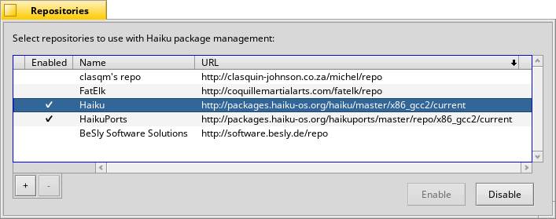

Repositori
Repositori
| Deskbar: | ||
| Lokasi: | /boot/system/preferences/Repositories | |
| Pengaturan: | ~/config/settings/Repositories_settings |
Repositori adalah kumpulan paket perangkat halus. Diatur secara default, ada repo Haiku dengan semua paket sistem operasi dan HaikuPorts, yang menyediakan sejumlah besar perangkat halus hasil port. Ada beberapa repositori tambahan, yang dibuat oleh anggota komunitas haiku. Silahkan cek di Situs perangkat halus di laman web.
Ini adalah panel preferensi untuk mengelola respositories Anda (Anda dapat membukanya juga dari HaikuDepot's menu):
Kolom pertama dalam daftar repositori yang diketahui menunjukkan apakah repo saat ini diaktifkan. Jika tidak memiliki tanda centang, itu tidak akan diminta oleh HaikuDepot atau pkgman dari perintah baris. Gunakan tombol or pada repositori terpilih,atau klik-dobel sebuah repo untuk membalik status.
Bergantung pada ukuran repositori dan kecepatan koneksi internet, mengaktifkan repositori mungkin memakan waktu beberapa detik. Jika itu membutuhkan waktu lebih lama, Anda diberitahu tentang tugas yang tertunda di kotak teks kecil di atas tombol . Jika terlalu lama, Anda akan diminta untuk membatalkan atau mencoba lagi.
Agar dapat menghapus repositori sepenuhnya dengan tombol "" itu harus dinonaktifkan.
Anda menambahkan repositori baru dengan tombol "" yang akan membuka panel ini:

Untuk menambahkan repositori baru, cukup rekatkan URL-nya ke dalam bidang teks. Itu akan dinamai "Tidak Dikenal" sampai Anda mengaktifkannya.